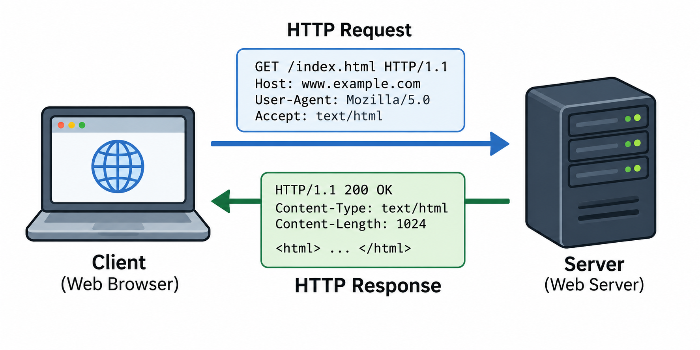

The Client and Server
HTTP communication usually takes place between a client and a server. The client asks for information, and the server responds to the request.
A web browser such as Chrome, Firefox, or Safari is an example of a client. When you enter a website address, the browser sends a request to the server that hosts the website. The server processes the request and sends the requested information back to the browser.
Client and Server Communication
The diagram below shows how a client sends an HTTP request to a web server and how the server sends an HTTP response back to the client.

HTTP Requests and Responses
HTTP communication works through requests and responses. A client sends an HTTP request to a server, and the server sends an HTTP response back to the client.
HTTP Request
A request tells the server what the client wants. It can include a method, the requested resource, and additional information called headers.
HTTP Response
A response tells the client what happened after the request was processed. It can include a status code, headers, and the requested content.
Common HTTP Methods
HTTP methods tell a server what type of action the client wants to perform. Some common HTTP methods include:
- GET: Requests information or a resource from a server.
- POST: Sends new information to a server.
- PUT: Updates or replaces information on a server.
- DELETE: Requests that information or a resource be removed.
HTTP Status Codes
HTTP status codes are numbers included in a server's response. They help the client understand whether a request was successful or whether a problem occurred.
- 200 OK: The request was successful.
- 301 Moved Permanently: The resource has moved to another location.
- 404 Not Found: The requested resource could not be found.
- 500 Internal Server Error: The server experienced an error.
A Simple HTTP Example
Imagine that you enter a website address into your browser. Your browser might send a request similar to:
GET /index.html HTTP/1.1
If the server successfully finds the page, part of its response might look like:
HTTP/1.1 200 OK
The server can then send the webpage content back to the browser, which displays it on your screen.